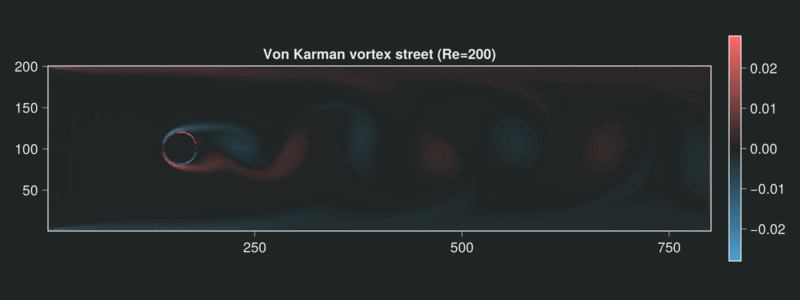
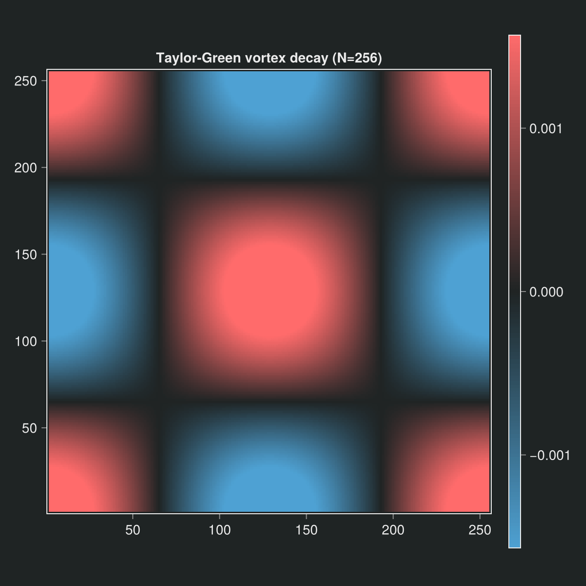
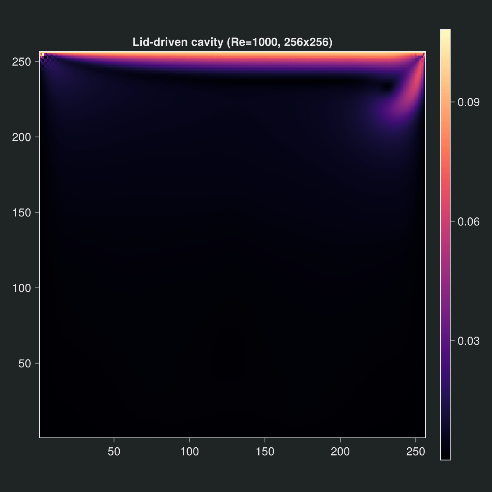
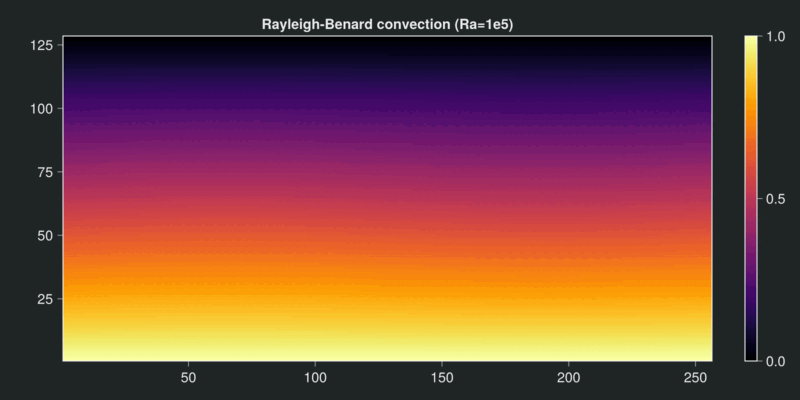

Kraken.jl
A GPU-native Lattice Boltzmann framework in Julia — write your solver once, run it on NVIDIA, Apple Silicon, AMD, or CPU.
Kraken.jl is a composable, high-performance Lattice Boltzmann (LBM) solver for incompressible and thermal flows. Kernels are written once against KernelAbstractions.jl and dispatched automatically to whatever hardware you have — no vendor-specific code in the physics layer.


Left: von Kármán vortex street past a cylinder (Re = 200). Right: Taylor–Green vortex decay.
Why Kraken
- One solver, every backend. The same kernel runs on CUDA, Metal (Apple Silicon), AMD ROCm, and multi-threaded CPU — selected at runtime, with no vendor-specific code in the physics layer.
- Fast where it counts. A single H100 sustains 7675 MLUPS for D2Q9 BGK, and up to 24 000 MLUPS with the fused Float32 kernels — see the performance benchmarks.
- Composable physics. BGK and MRT collision, Guo body forcing, thermal double-distribution coupling, and axisymmetric flows share one kinetic core.
- Validated against the literature. Lid-driven cavity (Ghia et al. 1982), natural convection (de Vahl Davis 1983), and 3D sphere drag (Clift et al.
- are cross-checked in the benchmarks, several
- Configuration without code. Describe a full run in a single declarative
.krkfile and launch it from the command line — no Julia required to drive a simulation. - Built for inspection. Fields stream to VTK (
.vti/.pvd) for ParaView, and stay in memory for direct postprocessing.
Quick start
using Kraken
# Lid-driven cavity at Re = 100 on a 128×128 grid
N = 128
ν = 0.1 * N / 100 # ν = u_lid · N / Re
config = LBMConfig(D2Q9(); Nx=N, Ny=N, ν=ν, u_lid=0.1, max_steps=30000)
result = run_cavity_2d(config)The same simulation can be written declaratively in a .krk file and launched from a shell:
# cavity.krk — lid-driven cavity at Re = 100
Simulation cavity D2Q9
Domain L = 1.0 x 1.0 N = 128 x 128
Physics nu = 0.128
Boundary north velocity(ux = 0.1, uy = 0)
Boundary south wall
Boundary east wall
Boundary west wall
Run 30000 stepskrk cavity.krkWhere to go next
- Installation — set up Kraken.jl and its GPU backends.
- Getting started — from zero to a running simulation.
- Concepts — the ideas behind the solver.
- Theory — ten progressive chapters, from kinetic theory to lattice Boltzmann.
- Tutorials & examples — validated runs with plots and convergence studies.
- Benchmarks — accuracy and performance measurements.
.krkDSL reference — the declarative configuration language.- API reference — every public function, documented.
Physics capabilities
| Capability | Lattice | Driver |
|---|---|---|
| Lid-driven cavity | D2Q9, D3Q19 | run_cavity_2d, run_cavity_3d |
| Channel flow (Poiseuille) | D2Q9 | run_poiseuille_2d |
| Couette flow | D2Q9 | run_couette_2d |
| Taylor–Green vortex | D2Q9 | run_taylor_green_2d |
| Cylinder drag | D2Q9 | run_cylinder_2d |
| Thermal convection | D2Q9 | run_rayleigh_benard_2d |
| Axisymmetric pipe flow | D2Q9 | run_hagen_poiseuille_2d |
Showcase gallery


Left: lid-driven cavity at Re = 1000 (primary vortex + corner eddies). Right: Rayleigh–Bénard convection cells at Ra = 1e5.
All four animations on this page are produced by the validated drivers shown in the table above; reproduce them from the examples and benchmarks.